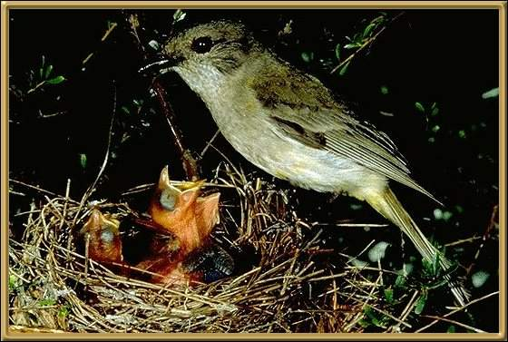

These birds are about 15-17cm (6-7 inches), and are found through Tasmania, parts of Western Australia, and most of the eastern seaboard. These birds are very territorial. One male regularly attacked his own reflection in a window at our home, trying to chase off this rival male!The male has a most beautiful golden chest.
Photographer: G Little